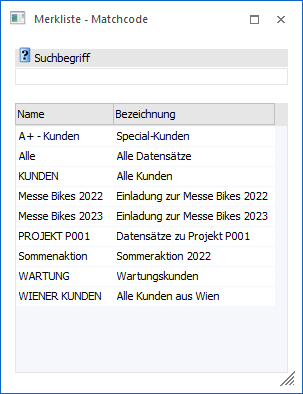
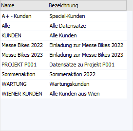

Wenn im Filter mit dem Operator "RL - in Merkliste" gearbeitet wird, so steht die Möglichkeit zur Verfügung, die passende Merkliste mittels Matchcode auszuwählen. Zum Öffnen des Matchcodes wird wiederum das Lupen-Symbol bzw. die Taste F9 im Feld "Wert 1 " gedrückt.
Hinweis
Wenn in dem Feld "Wert 1" ein Teil des gesuchten Namens oder der Bezeichnung eingetragen wurde und die Taste F9 gedrückt wird, dann wird diese Eingabe als Suchbegriff übernommen und die Suche direkt gestartet.

Suchbegriff

Ø Suchbegriff
Die Auswahl kann durch die Eingabe eines Suchbegriffs eingeschränkt werden. Die Suche erfolgt in den Feldern "Name" und "Bezeichnung".
Tabelle "Suchergebnis"

In der Tabelle werden nach Auslösen der Suche (Button "Anzeigen" oder Suchbegriff bestätigen) die gefundenen Merklisten mit ihrem Namen und Bezeichnung angezeigt. Per Doppelklick oder Enter-Taste kann die ausgewählte Merkliste anschließend in das Ausgangsfenster übernommen werden.
Hinweis
Neben den direkt angezeigten Spalten stehen viele optionalen Spalten zur Verfügung. Dieses können über das Kontextmenü der rechten Maustaste (Funktion "Spalten anzeigen/verstecken") in die Tabelle eingebunden werden. Des Weiteren werden immer nur all jene Merklisten vorgeschlagen, die in dem jeweiligen Filter hinterlegt werden können.
Beispiel
Es wird im Filter die Variable "AN-Nummer" mit dem Operator "RL - in Merkliste" hinterlegt. Ruft man nun den Matchcode auf, so werden nur Merklisten des Typen "Arbeitnehmer" angezeigt.
Tabellenbuttons

Ø Ausgabe Excel
Durch Anwahl des Buttons "Ausgabe Excel" wird der Inhalt der Tabelle nach Microsoft Excel übergeben.
Ø Tabelleneinstellungen speichern
Die Spalten einer Tabelle können grundsätzlich an beliebige Positionen verschoben, bzw. in der Breite entsprechend angepasst werden. Durch Anwahl des Buttons "Tabelleneinstellungen speichern" werden die Einstellungen benutzerspezifisch gespeichert und bei dem nächsten Aufruf des Programmpunktes wieder vorgeschlagen.
Ø Gesamteinstellungen speichern…
Im Gegensatz zu "Tabelleneinstellungen speichern" können mit "Gesamteinstellungen speichern" mehrere Tabellenaufbauten gespeichert und nach Wunsch geladen werden. Zusätzlich werden Sonderfunktionen der Tabelle (z.B. "Spalte gruppieren") ebenfalls bei der Speicherung bedacht.
Buttons
Ø Anzeigen
Durch Anwahl des Buttons "Anzeigen" bzw. der Taste F5 wird die Suche gestartet.
Hinweis
Durch Bestätigung der Eingabe im Feld "Suchbegriff" wird die Suche ebenfalls gestartet.
Ø Ende
Durch Anwahl des Buttons "Ende" bzw. der Taste ESC wird das Fenster geschlossen.
Ø Neuanlage
Über den Button "Neuanlage" wird das Fenster Merkliste geöffnet, in welchem neue Merklisten angelegt oder bestehende Merklisten bearbeitet werden können.
Ø Editieren
Durch Anwahl des Buttons "Editieren" wird das Fenster Merkliste geöffnet, in welchem die Merkliste editiert werden kann.